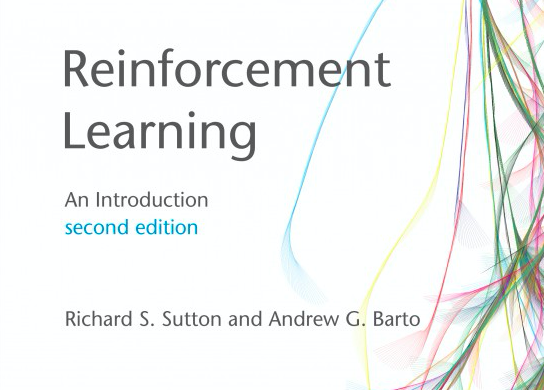
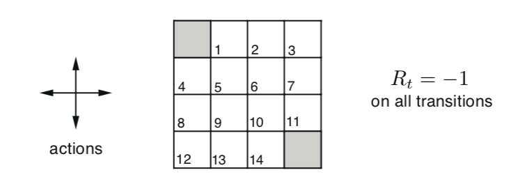
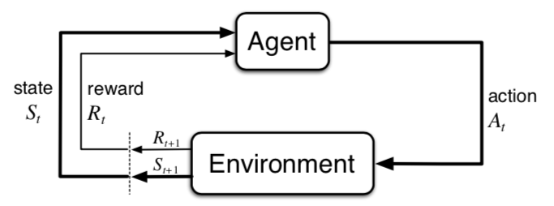
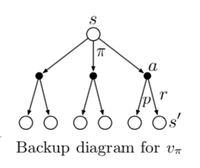
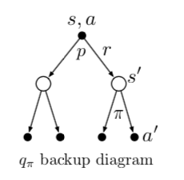
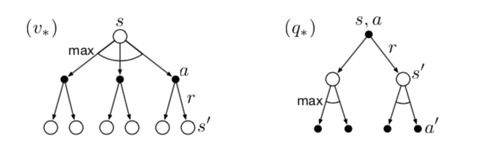
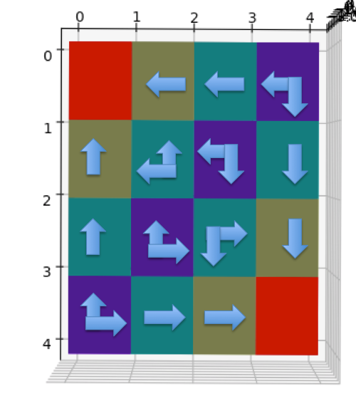
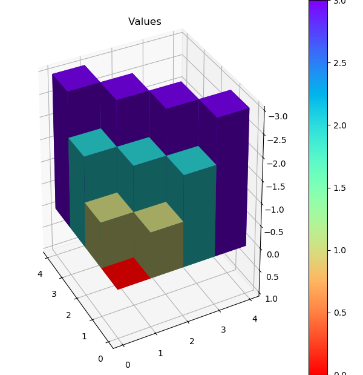
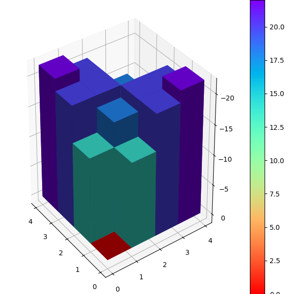

经典教材Reinforcement Learning: An Introduction 第二版由强化领域权威Richard S. Sutton 和 Andrew G. Barto 完成编写，内容深入浅出，非常适合初学者。在本篇中，引入Grid World示例，结合强化学习核心概念，并用python代码实现OpenAI Gym的模拟环境，进一步实现策略评价算法。

Grid World 问题

第四章例子4.1提出了一个简单的离散空间状态问题：Grid World，其大致意思是在4x4的网格世界中有14个格子是非终点状态，在这些非终点状态的格子中可以往上下左右四个方向走，直至走到两个终点状态格子，则游戏结束。每走一步，Agent收获reward -1，表示Agent希望在Grid World中尽早出去。另外，Agent在Grid World边缘时，无法继续往外只能呆在原地，reward也是-1。
Finite MDP 模型 先来回顾一下强化学习的建模基础：有限马尔可夫决策过程（Finite Markov Decision Process, Finite MDP）。如下图，强化学习模型将世界抽象成两个实体，强化学习解决目标的主体Agent和其他外部环境。它们之间的交互过程遵从有限马尔可夫决策过程：若Agent在t时间步骤时处于状态 $S_t$，采取动作 $A_t$，然后环境根据自身机制，产生Reward $R_{t+1}$ 并将Agent状态变为 $S_{t+1}$。

环境自身机制又称为dynamics，工程上可以看成一个输入(S, A)，输出(S, R)的方法。由于MDP包含随机过程，某个输入并不能确定唯一输出，而会根据概率分布输出不同的(S, R)。Finite MDP简化了时间对于模型的影响，因为(S, R)只和(S, A)有关，不和时间t有关。另外，有限指的是S，A，R的状态数量是有限的。
数学上dynamics可以如下表示
$$
p\left(s^{\prime}, r \mid s, a\right) \doteq \operatorname{Pr}\left\{S_{t}=s^{\prime}, R_{t}=r \mid S_{t-1}=s, A_{t-1}=a\right\}
$$
即是四元组作为输入的概率函数 $p: S \times R \times S \times A \rightarrow [0, 1]$。
满足
以Grid World为例，当Agent处于编号1的网格时，可以往四个方向走，往任意方向走都只产生一种 S, R，因为这个简单的游戏是确定性的，不存在某一动作导致stochastic状态。例如，在1号网格往左就到了终点网格（编号0），得到Reward -1这个规则可以如下表示
$$
\begin{aligned}
p\left(s^{\prime}=0, r=-1 \mid s=1, a=\text{L}\right) &=& 1 \\
p\left(s^{\prime}=2, r=-1 \mid s=1, a=\text{R}\right) &=& 1 \\
p\left(s^{\prime}=1, r=-1 \mid s=1, a=\text{U}\right) &=& 1 \\
p\left(s^{\prime}=5, r=-1 \mid s=1, a=\text{D}\right) &=& 1
\end{aligned}
$$
强化学习的目的 在给定了问题以及定义了强化学习的模型之后，强化学习的目的当然是通过学习让Agent能够学到最佳策略$\pi_{*}$，也就是在某个状态下的行动分布，记成 $\pi(a|s)$。对应在数值上的优化目标是Agent在一系列过程中采取某种策略的reward总和的期望（Expected Return）。下面公式定义了t步往后的reward总和，其中 $\gamma$ 为discount factor，用于权衡短期和长期reward对于当前Agent的效用影响。等式最后一步的意义是t步后的reward总和等价于t步所获的立即reward $R_{t+1}$，加上t+1步后的reward总和 $\gamma G_{t+1}$。
$$
\begin{aligned}
G_{t} & \doteq R_{t+1}+\gamma R_{t+2}+\gamma^{2} R_{t+3}+\gamma^{3} R_{t+4}+\cdots \\
&=R_{t+1}+\gamma\left(R_{t+2}+\gamma R_{t+3}+\gamma^{2} R_{t+4}+\cdots\right) \\
&=R_{t+1}+\gamma G_{t+1}
\end{aligned}
$$
有了reward总和的定义，评价Agent策略 $\pi$ 就可以定义成Agent在状态 s 时采用此策略的Expected Return。
$${\pi}\left[G {t} \mid S_{t}=s\right]
下面公式推导了 $v_{\pi}(s)$ 数值上和相关状态 $s{\prime}$ 的关系：
$$
\begin{aligned}
v_{\pi}(s) &\doteq \mathbb{E}_{\pi}\left[G_{t} \mid S_{t}=s\right] \\
&=\mathbb{E}_{\pi}\left[\sum_{k=0}^{\infty} \gamma^{k} R_{t+k+1} \mid S_{t}=s\right]\\
&=\mathbb{E}_{\pi}\left[R_{t+1}+\gamma G_{t+1} \mid S_{t}=s\right] \\
&=\sum_{a} \pi(a \mid s) \sum_{s^{\prime}} \sum_{r} p\left(s^{\prime}, r \mid s, a\right)\left[r+\gamma \mathbb{E}_{\pi}\left[G_{t+1} \mid S_{t+1}=s^{\prime}\right]\right] \\
&=\sum_{a} \pi(a \mid s) \sum_{s^{\prime}, r} p\left(s^{\prime}, r \mid s, a\right)\left[r+\gamma v_{\pi}\left(s^{\prime}\right)\right] \quad \text { for all } s \in \mathcal{S}
\end{aligned}
$$
注意到如果将 $v_{\pi}(s)$ 看成未知数，上式即形成 $\mid \mathcal{S} \mid$ 个未知变量的方程组，可以在数值上解得各个 $v_{\pi}(s)$。
书中用Backup Diagram来表示递推关系，下图是$v_{\pi}(s)$的backup diagram。

尽管v值可以来衡量策略，但由于$v_{\pi}(s)$ 是Agent在策略$\pi(a|s)$的Expected Return，将不同的action拆出来单独计算Expected Return，这样的做法有时更为直接，这就是著名的Q Learning中的q 值，记成$q_{\pi}(s, a)$ 。
$${\pi}\left[G {t} \mid S_{t}=s, A_{t}=a\right]
下面是 $q_{\pi}(s, a) $ 的递推 backup diagram。

Bellman 最佳原则 对于所有状态集合$\mathcal{S}$，策略${\pi}$的评价指标 $v_{\pi}(s)$ 是一个向量，本质上是无法相互比较的。但由于存在Bellman 最佳原则（Bellman’s principle of optimality）：在有限状态情况下，一定存在一个或者多个最好的策略 ${\pi}{*}$，它在所有状态下的v值都是最好的，即 $v {\pi_{*}}(s) \ge v_{\pi^{\prime}}(s) \text { for all } s \in \mathcal{S}$。
因此，最佳v值定义为最佳策略 ${\pi}_{*}$ 对应的 v 值
$$
同理，也存在最佳q值，记为
将 $v_{*}(s)$ 改写成递推形式，称为 Bellman Optimality Equation，推导如下
$$
\begin{aligned}
v_{*}(s) &=\max _{a \in \mathcal{A}(s)} q_{\pi_{*}}(s, a) \\
&=\max _{a} \mathbb{E}_{\pi_{*}}\left[G_{t} \mid S_{t}=s, A_{t}=a\right] \\
&=\max _{a} \mathbb{E}_{\pi_{*}}\left[R_{t+1}+\gamma G_{t+1} \mid S_{t}=s, A_{t}=a\right] \\
&=\max _{a} \mathbb{E}\left[R_{t+1}+\gamma v_{*}\left(S_{t+1}\right) \mid S_{t}=s, A_{t}=a\right] \\
&=\max _{a} \sum_{s^{\prime}, r} p\left(s^{\prime}, r \mid s, a\right)\left[r+\gamma v_{*}\left(s^{\prime}\right)\right]
\end{aligned}
$$
直觉上可以理解为状态 s 对应的最佳v值是只采取此状态下的最佳动作后的Expected Return。
最佳q值递归形式的意义为最佳策略下状态s时采取行动 a 的Expected Return，等于所有可能后续状态 s’ 下采取最优行动的Expected Return的均值。推导如下：
$$
\begin{aligned}
q_{*}(s, a) &=\mathbb{E}\left[R_{t+1}+\gamma \max _{a^{\prime}} q_{*}\left(S_{t+1}, a^{\prime}\right) \mid S_{t}=s, A_{t}=a\right] \\
&=\sum_{s^{\prime}, r} p\left(s^{\prime}, r \mid s, a\right)\left[r+\gamma \max _{a^{\prime}} q_{*}\left(s^{\prime}, a^{\prime}\right)\right]
\end{aligned}
$$
$v_{}(s), q_{ }(s, a)$ 的backup diagram 如下图

Grid World 最佳策略和V值 Grid World 的最佳策略如下：尽可能快的走出去

Grid World最佳策略
上面的2D图中不同颜色表示不同V值，终点格子的红色表示0，隔着一步的黄色为-1，隔两步的绿色为-2，最远的紫色为-3。下面是立体图示。

Grid World最佳策略V值
Grid World OpenAI Gym 环境 下面是OpenAI Gym框架下Grid World环境的代码实现。本质是在GridWorldEnv构造函数中构建MDP，类型定义如下
1 2 3 4 5 6 MDP = Dict [State, Dict [Action, List [Tuple [Prob, State, Reward, bool ]]]]
{linenos 1 2 3 4 5 6 7 8 9 10 11 12 13 14 15 16 17 18 19 20 21 22 23 24 25 26 27 28 29 30 31 32 33 34 35 36 37 38 39 40 41 42 43 44 45 46 47 48 49 class Action (Enum ): UP = 0 DOWN = 1 LEFT = 2 RIGHT = 3 State = int Reward = float Prob = float Policy = Dict [State, Dict [Action, Prob]] Value = List [float ] StateSet = Set [int ] NonTerminalStateSet = Set [int ] MDP = Dict [State, Dict [Action, List [Tuple [Prob, State, Reward, bool ]]]] class GridWorldEnv (discrete.DiscreteEnv ): """ Grid World environment described in Sutton and Barto Reinforcement Learning 2nd, chapter 4. """ def __init__ (self, shape=[4 ,4 ] ): self.shape = shape nS = np.prod(shape) nA = len (list (Action)) MAX_R = shape[0 ] MAX_C = shape[1 ] self.grid = np.arange(nS).reshape(shape) isd = np.ones(nS) / nS P: MDP = {} action_delta = {Action.UP: (-1 , 0 ), Action.DOWN: (1 , 0 ), Action.LEFT: (0 , -1 ), Action.RIGHT: (0 , 1 )} for s in range (0 , MAX_R * MAX_C): P[s] = {a.value : [] for a in list (Action)} is_terminal = self.is_terminal(s) if is_terminal: for a in list (Action): P[s][a.value] = [(1.0 , s, 0 , True )] else : r = s // MAX_R c = s % MAX_R for a in list (Action): neighbor_r = min (MAX_R-1 , max (0 , r + action_delta[a][0 ])) neighbor_c = min (MAX_C-1 , max (0 , c + action_delta[a][1 ])) s_ = neighbor_r * MAX_R + neighbor_c P[s][a.value] = [(1.0 , s_, -1 , False )] super (GridWorldEnv, self).__init__(nS, nA, P, isd)
策略评估（Policy Evaluation） 策略评估需要解决在给定环境dynamics和Agent策略 $\pi$下，计算策略的v值 $v_{\pi}$。由于所有数量关系都已知，可以通过解方程组的方式求得，但通常会通过数值迭代的方式来计算，即通过一系列 $v_{0}, v_{1}, …, v_{k}$ 收敛至 $v_{\pi}$。如下迭代方式已经得到证明，当 $k \rightarrow \infty$ 一定收敛至 $v_{\pi}$。
$$
\begin{aligned}
v_{k+1}(s) & \doteq \mathbb{E}_{\pi}\left[R_{t+1}+\gamma v_{k}\left(S_{t+1}\right) \mid S_{t}=s\right] \\
&=\sum_{a} \pi(a \mid s) \sum_{s^{\prime}, r} p\left(s^{\prime}, r \mid s, a\right)\left[r+\gamma v_{k}\left(s^{\prime}\right)\right]
\end{aligned}
$$
书中具体伪代码如下
$$
\begin{align*}
&\textbf{Iterative Policy Evaluation, for estimating } V\approx v_{\pi} \\
& \text{Input } {\pi}, \text{the policy to be evaluated} \\
& \text{Algorithm parameter: a small threshold } \theta > 0 \text{ determining accuracy of estimation} \\
& \text{Initialize } V(s), \text{for all } s \in \mathcal{S}^{+} \text{, arbitrarily except that } V (terminal) = 0\\
& \\
&1: \text{Loop:}\\
&2: \quad \quad \Delta \leftarrow 0\\
&3: \quad \quad \text{Loop for each } s \in \mathcal{S}:\\
&4: \quad \quad \quad \quad v \leftarrow V(s) \\
&5: \quad \quad \quad \quad V(s) \leftarrow \sum_{a} \pi(a \mid s) \sum_{s^{\prime}, r} p\left(s^{\prime}, r \mid s, a\right)\left[r+\gamma V\left(s^{\prime}\right)\right] \\
&6: \quad \quad \quad \quad \Delta \leftarrow \max(\Delta, |v-V(s)|) \\
&7: \text{until } \Delta < \theta
\end{align*}
$$
下面是python 代码实现，注意这里单run迭代时，新的v值直接覆盖数组里的旧v值，这种做法在书中被证明不仅有效，甚至更为高效。这种做法称为原地（in place）更新。
{linenos 1 2 3 4 5 6 7 8 9 10 11 12 13 14 def policy_evaluate (policy: Policy, env: GridWorldEnv, gamma=1.0 , theta=0.0001 ): V = np.zeros(env.nS) while True : delta = 0 for s in range (env.nS): v = 0 for a, action_prob in enumerate (policy[s]): for prob, next_state, reward, done in env.P[s][a]: v += action_prob * prob * (reward + gamma * V[next_state]) delta = max (delta, np.abs (v - V[s])) V[s] = v if delta < theta: break return np.array(V)
输入策略为随机选择方向，运行上面的policy_evaluate最终多轮收敛后的V值输出为
{linenos 1 2 3 4 [[ 0. -13.99931242 -19.99901152 -21.99891199 ] [-13.99931242 -17.99915625 -19.99908389 -19.99909436 ] [-19.99901152 -19.99908389 -17.99922697 -13.99942284 ] [-21.99891199 -19.99909436 -13.99942284 0. ]]
在3D V值图中可以发现，由于是随机选择方向的策略， Agent在每个格子的V值绝对数值要比最佳V值大，意味着随机策略下Agent在Grid World会得到更多的负reward。

Grid World随机策略V值
评论
shortnamefor Disqus. Please set it in_config.yml.